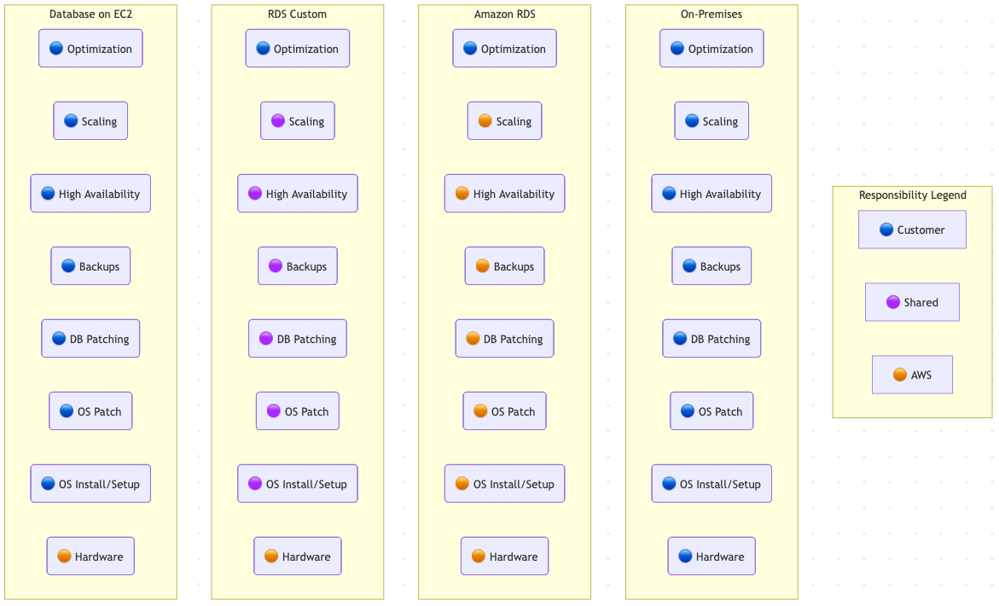

1. Amazon RDS Foundations
Amazon Relational Database Service automates provisioning, patching, and backups for managed engines (MySQL, PostgreSQL, MariaDB, SQL Server, Oracle). Key building blocks:
- Subnet groups span multiple AZs and determine where instances launch.
- CNAME endpoints abstract the current primary; applications connect via DNS rather than fixed IPs.
- Instances can host multiple databases and use dedicated EBS storage (SSD or HDD).
1.1 Multi-AZ Deployments
Instance-based Multi-AZ
- Primary + single standby in different AZs.
- Synchronous, storage-level replication; commits succeed only after both copies persist.
- Standby is passive. Applications always point at the CNAME of the primary. When the primary fails (planned or unplanned) DNS is updated to the standby’s IP. Expect 60–120 seconds of failover while the database process restarts and clients refresh DNS.
- Best for traditional engines that do not need read-scale but do need durable writes and automatic backups.
Cluster-based Multi-AZ
- One writer and up to two readers across AZs.
- Synchronous log-based replication; commit waits for at least one reader to persist the change. Because each node runs its own instance, readers can be promoted quickly if the writer fails.
- Provides a reader endpoint that automatically load balances SELECT traffic, plus instance endpoints for targeted testing.
- Failover is typically ~35 seconds plus transaction-log catch-up, delivering faster RTO than instance-based Multi-AZ while allowing some read scaling.
1.2 Read Replicas
- Asynchronous replication (optional in addition to Multi-AZ) that operates at the storage/transaction-log layer.
- Up to 5 replicas per instance; replicas can cascade (replica of replica) but each additional hop introduces lag, so keep the tree shallow.
- Common patterns:
- Scale-out reads – point BI/reporting jobs or API readers to read replica endpoints.
- Cross-Region DR – place replicas in other regions for near-zero RPO and promote during regional outages.
- Blue/Green cutovers – promote a replica after schema upgrades instead of restoring from snapshot.
- Promotion is a fast, push-button operation: replica becomes a standalone primary with its own endpoint. Because replication is asynchronous, treat it as DR for outages—not for logical corruption, which would replicate to replicas immediately.
1.3 Backups, Snapshots, Restores
- Automated backups (disabled by default) capture daily snapshots plus 5-minute transaction log uploads to S3; RPO ≈ 5 minutes, retention 0–35 days, can replicate cross-region.
- Manual snapshots persist until deleted; first snapshot is full, subsequent are incremental.
- Restores always create new instances with new endpoints; point-in-time restores replay logs from the automated backup window.
1.4 Security and Cost
- TLS/SSL available for in-transit encryption; at-rest encryption uses KMS-backed EBS volumes (irreversible once enabled).
- Oracle and SQL Server support Transparent Data Encryption (TDE); Oracle can integrate with CloudHSM for customer-controlled keys.
- IAM database authentication issues 15-minute tokens mapped to DB users, reducing static credential use.
- Cost factors: instance class, Multi-AZ, storage type/capacity, data transfer, backup storage, and bring-your-own-license options.
2. Amazon Aurora
2.1 Architecture
- Aurora decouples compute and storage via a 128 TiB shared cluster volume with six copies across three AZs.
- Primary writer sends log records to the storage subsystem; replicas read from the same volume, enabling fast failover.
- Endpoints:
- Cluster endpoint – connects to the primary writer.
- Reader endpoint – load balances across replicas.
- Instance endpoints – direct to a specific instance (useful for testing and fault isolation).
- Storage auto-scales; billing covers actual GB-month plus I/O.
2.2 Operations
- Restores/spin-ups create new clusters; backtrack enables rewinding to a prior timestamp without snapshots (useful for logical corruption).
- Fast database cloning copies metadata and shares data pages, only duplicating changed pages.
- No free tier; micro instances not supported. Aurora often costs less than RDS when factoring multi-AZ throughput per dollar.
2.3 Aurora Serverless v2
- Removes instance management; capacity measured in Aurora Capacity Units (ACUs).
- Proxy fleet handles connections while compute scales between configured min/max ACUs and can pause when idle.
- Ideal for infrequently used applications, new workloads with unknown sizing, multi-tenant SaaS, or dev/test clusters.
2.4 Aurora Multi-Master
- Multiple read/write instances; clients can connect to any writer endpoint.
- Storage-level replication ensures cross-AZ durability. Last-writer-wins conflict resolution when concurrent writes touch the same rows.
- Eliminates DNS failover delays: if one writer fails, connections continue against remaining writers.
3. RDS Proxy & RDS Custom
3.1 RDS Proxy
- Managed connection pooling layer sitting in your VPC between applications and RDS/Aurora.
- Maintains a warm pool of database connections, multiplexes client requests, and reduces failover times by up to 50%.
- Enforce TLS, integrate with IAM auth, and smooth out connection storms (e.g., Lambda functions opening/closing frequently).
- Recommended when hitting connection limits, running burstable t-class DB instances, or using serverless compute against RDS.
3.2 RDS Custom
- Bridges the gap between fully managed RDS and self-managed EC2 databases.
- Available for Oracle and SQL Server; provides SSH/RDP/Session Manager access to the underlying host to install agents, customize OS settings, or meet strict compliance.
- Automation can be paused (“pause and customize”) during changes, then resumed for managed backups/patching.

🧩 RDS Responsibilities
4. Amazon DynamoDB
4.1 Table Model & Capacity
- Key-value and document store with single-digit millisecond latency backed by SSDs and automatic AZ replication.
- Tables consist of items keyed by a partition key (PK) or composite key (PK + sort key). Items can vary in attributes but max out at 400 KB, allowing sparse schemas.
- Capacity controls throughput (not storage). Units:
- 1 RCU = one strongly consistent read of 4 KB/sec (eventual consistency halves RCU consumption).
- 1 WCU = one 1 KB write/sec.
- Burst capacity: unused throughput accumulates for up to 300 seconds.
- Provisioned mode sets fixed RCUs/WCUs; on-demand mode bills per million read/write units without upfront planning.
- Sizing example: storing 10 items per second averaging 2.5 KB requires
ceil(2.5 KB / 1 KB) = 3 WCUsper item × 10 writes = 30 WCUs. Similar logic applies to reads, using 4 KB increments.
4.2 Backups & PITR
- On-demand backups snapshot tables (with or without indexes) and restore into same/cross regions with new encryption settings.
- Point-in-time recovery (disabled by default) records incremental changes for 35 days with 1-second granularity; enables rewind to any point in that window.
4.3 Query vs. Scan
- Query operates on a single partition key (optionally sort key ranges); consumed capacity equals all returned items before filters.
- Scan walks every item (or a segment) regardless of keys; flexible but expensive in RCUs. Use filters sparingly—capacity is still spent.
4.4 Consistency Models
- Data replicates to multiple AZs with a leader managing writes.
- Eventual consistency (default) returns results that may be up to one second stale but consumes half the RCUs.
- Strong consistency reads from the leader for the latest committed data.
4.5 Secondary Indexes
- Local Secondary Index (LSI) – alternate sort key on the same partition key; must be created with the table, up to five LSIs, shares RCUs/WCUs, supports strong consistency. Great for multiple chronological views of the same customer/account.
- Global Secondary Index (GSI) – alternate partition and sort keys; can be added later, each with its own RCUs/WCUs, defaults to eventual consistency (strong reads only in same region). Enables “query by anything else” patterns such as email, status, or composite attributes.
- Remember that GSIs consume their own capacity. Monitor
ConsumedReadCapacityUnits/ConsumedWriteCapacityUnitsmetrics per index to avoid throttling.
4.6 Streams & Triggers
- Streams capture ordered inserts/updates/deletes with 24-hour retention; enable on a per-table basis and choose image format (keys only, new, old, new+old).
- Common pattern: Streams + Lambda to react to data changes for analytics, notifications, or search indexing.
4.7 DynamoDB Accelerator (DAX)
- Managed in-memory cache for DynamoDB; deployed inside a VPC across AZs. Think of it as a fully managed Redis-tier dedicated to DynamoDB traffic.
- Applications use the DAX SDK; cache handles GetItem/Query results, reducing DynamoDB calls from milliseconds to microseconds and shielding tables from read bursts.
- Cluster architecture:
- Primary node handles writes and cache population.
- Replicas serve read traffic; failover promotes a replica without client-side changes.
- Item cache stores GetItem results; query cache stores Query/Scan responses keyed by parameters.
- Supports write-through (cache updated on write) and write-around (only reads populate cache) policies.
4.8 Global Tables & TTL
- Global Tables replicate tables across regions in an active-active fashion (last-writer-wins conflict resolution). Reads/writes in any region replicate in seconds. Strong consistency only available within the Region where the write occurred.
- Time to Live (TTL) marks per-item expiry timestamps; DynamoDB removes expired items without consuming WCUs. Streams can capture deletions for auditing.
5. Analytics & Specialty Databases
5.1 Amazon OpenSearch Service (formerly Elasticsearch)
- Managed deployment of the ELK stack components (OpenSearch, Kibana, optional Logstash).
- Useful when organizations already rely on Elasticsearch for log analytics, full-text search, or observability dashboards.
- Offers integration with VPCs, fine-grained access control, and automated cluster management.
5.2 Amazon Athena
- Serverless SQL queries against data in S3 using schema-on-read (Glue Data Catalog).
- Pay per TB scanned; supports structured (CSV, Parquet), semi-structured (JSON), and direct querying of AWS service logs (CloudTrail, ELB, VPC Flow Logs).
- Great for ad-hoc analytics, log exploration, and low-cost reporting without ETL pipelines.
5.3 Amazon Neptune
- Managed graph database supporting property graphs (Gremlin, openCypher) and RDF/SPARQL.
- VPC-only deployment, Multi-AZ failover, and read replicas for scale.
- Continuous backups to S3; suited for knowledge graphs, fraud graphs, and relationship-heavy workloads.
5.4 Amazon QLDB
- Immutable, append-only ledger database with cryptographically verifiable transaction log.
- Serverless; replicates across three AZs and exposes full history for auditing.
- Ideal for financial systems of record, supply-chain tracking, and compliance-sensitive logs.
- Streams can feed Kinesis for downstream processing.
6. Exam Reminders
- RDS snapshots – stored in S3 for point-in-time recovery; replicating or promoting cross-Region replicas triggers a reboot. Deletion protection guards against accidental deletes but does not replace backups.
- Redshift snapshots – when copying encrypted snapshots cross-Region, create a snapshot copy grant referencing the destination CMK.
- Aurora fast restart – buffer cache lives outside the database process so restarts avoid lengthy redo replay; typical restart times are under a minute.